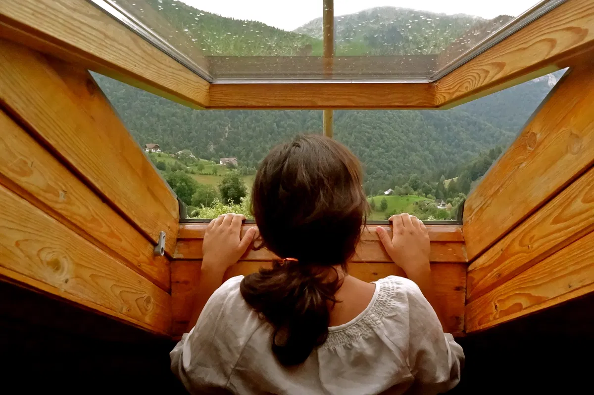
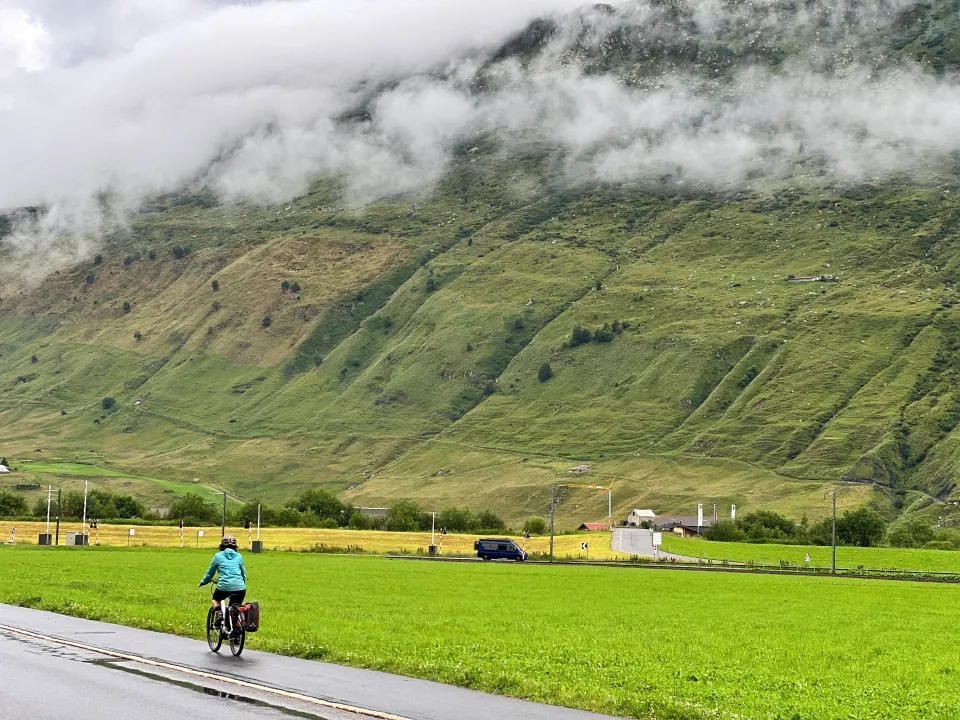
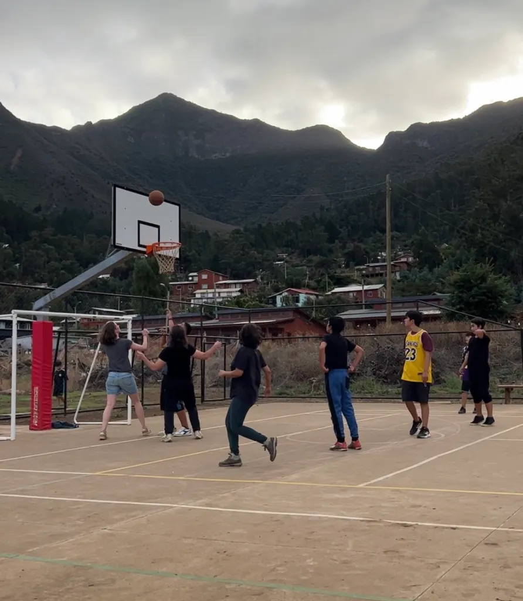

7 Years of Travelling Without a Home – and Then a Pandemic.
7 years ago, I gave up my home, sold most of my possessions and embraced a nomadic life. This journey has taken me as far within as with my feet.
Before I landed within your borders, I had heard many people wax
eloquent about the beauty of your mountains, forests, rivers and
lakes. And no doubt, I was awed by their beauty too.
But I had no idea that it would be the beauty of your people that
would really overwhelm me. While quarantining in a drab hotel room in
Santiago, the nurse who came for one of many precautionary Covid
tests, told me that quarantine could be really isolating, gave me his
card and told me to call him if I felt like I was losing my mind.
When a big boat arrived with much-awaited supplies on the island, I naïvely showed up at the local shop to buy a bunch of Chilean avocados – not knowing that wait times to buy produce on ‘boat days’ could be as long 4 hours, as people bought kilos of vegetables and fruits to last until the next boat! A friendly fisherman noticed my amazement, offered to get me some avocados during his turn, and wouldn’t even let me pay for them. Artisans, guides and many associated with tourism shared with me their dream of a self-sustainable island – the seeds of which we tried to sow through the Work for Humankind project enabled by Lenovo and Island Conservation.
Many, many islanders shared their life stories with me, but one let me in to a dark, personal part of his life. To bear witness to someone’s journey, on the other side of the world, in a language that isn’t my own, is perhaps the most humbling part of travel. Creativity and art flow in many people’s blood across the island and continental Chile, but a long time resident invited me time and again into his idyllic home, poetic world, art collection and fascinating stories. Every conversation made me want to learn more Spanish, so we could have more profound discussions.
Knowing how hard it was to find lunch on the island – with most restaurants closed during the pandemic and shops usually out of basic supplies – a sweet island family often invited me to share their family meals: garbanzo (chickpea stew), lentejas (lentils cooked Chilean style), stirfried veggies with rice, vegan desserts and much more.
Most evenings on the island, I showed up at the community Basketball court on the island to play this sport I love so much, but have hardly had a chance to play since university. The local players always invited me to join them, reminding me of Basketball friendships I’ve missed all along.
Even as someone who almost always chooses memories over souvenirs, I felt so lucky to be gifted a personalized, rare coral negro (black coral, broken by the waves), creatively shaped and polished into a stunning star – to represent The TravelBug – by two local divers.


Places to visit in Europe
- Paris
- London
- Rome
- Florence
- Barcelona
- Swiss Alps.
Places to visit in Canada
- Calgary
- Churchill
- Cape Breton Island
- Ottawa
- Whistler
- Vancouver Island
- Quebec
- Toronto